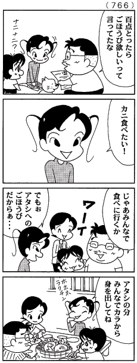

直接話法と間接話法

出典：森下裕美『ウチの場合は』（毎日新聞）
「〜と言う。」（「〜と言います。」）や「〜と言った。」（「〜と言いました。」）は、〈だれかが話した内容を別の人に伝える〉表現である。
「〜と言う。」の表現には、だれかが話したことばをそのまま伝える（＝引用する）ものと、別のことばにまとめ直して伝えるものとがある。
だれかが話したことばをそのまま伝える表現のしかたを『直接話法』と呼ぶ。一方、だれかが話したことばをまとめ直して伝える表現のしかたを『間接話法』と呼ぶ。
たとえば、右のマンガの２コマ目を『直接話法』で表現すれば、
姉は「カニ食べたい」と言った。
のようになる。これを『間接話法』で表現するならば、
姉は、ごほうびはカニがいいと言った。
のようになるだろう。
- 直接話法
- だれかが話したことばを、そのまま引用する。
例：姉は、「カニ食べたい。」と言った。
- 間接話法
- だれかが話したことばの内容を引用する。
例：姉は、ごほうびはカニがいいと言った。
直接話法
直接話法は、だれかが話したことばをそのまま（かたちを変えずに）表現する。直接話法の文では、引用の部分をカギカッコ（「 」）でくくって示すのがふつうである。
- 張さんは「台北に行きます。」と言っていました。
- 彼は「助けてくれ！助けてくれ！助けてくれ！」と言った。
- 先生が「研究室に来なさい。」と言いました。
- 天気予報では、「明日は雨が降るでしょう。」と言っていました。
間接話法
間接話法は、だれかが話したことばの内容を（表現を変えて）表現する。間接話法では、ことばの内容をカギカッコ（「 」）でくくってはいけない。
- 張さんは台北に行くと言っていました。
- 彼は何度も助けてほしいと言った。
- 先生が研究室に来るように言いました。
- 天気予報では、今日は雨が降るだろうと言っていました。
直接話法と間接話法のちがい
直接話法と間接話法では、次のようなちがいがある。
- 間接話法では「と」の前が常体になる【参考：常体と敬体】
- 直接話法：張さんは「台北に行きます。」と言っていました。
- 間接話法：張さんは台北に行くと言っていました。（×張さんは台北に行きますと言っていました。）
- 間接話法では、話の内容が命令の場合「〜ように」となる
- 直接話法：先生が「研究室に来なさい。」と言いました。
- 間接話法：先生が研究室に来るように言いました。
- 間接話法では、日時の表現が変わることがある（→くわしい説明）
- 直接話法：天気予報では、「明日は雨が降るでしょう。」と言っていました。
- 間接話法：天気予報では、今日は雨が降るだろうと言っていました。
→ 練習問題